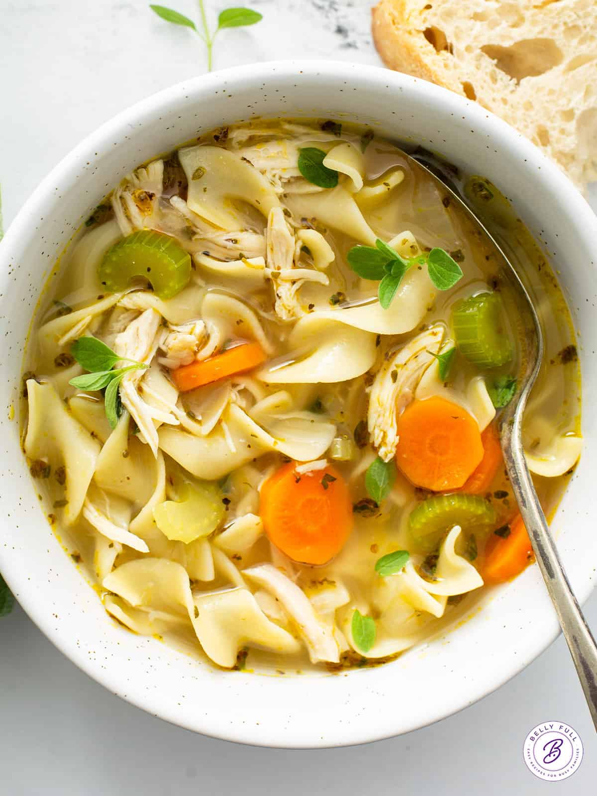

Chicken Noodle Soup

This is a recipe on how to make Chicken Noodle Soup
Ingredients
- 1 tablespoon butter
- 1/2 cup chopped onion
- 1/2 cup choppedj celery
- 4 cans chicken broth
- 1 can vegetable broth
- 1/2 pound chopped cooked chicken breast
- 1 1/2 cups egg noodles
- 1 cup sliced carrots
- 1/2 teaspoon dried basil
- 1/2 teaspoon dried oregano
- salt and ground black pepper to taste
Steps
- Melt butter in a large pot over medium heat. Add onion and celery and cook until just tender, about 5 minutes.
- Add chicken broth, vegetable broth, chicken, egg noodles, basil, oregano, salt, and pepper. Stir to combine and bring to a boil.
- Reduce heat and simmer for 20 minutes.